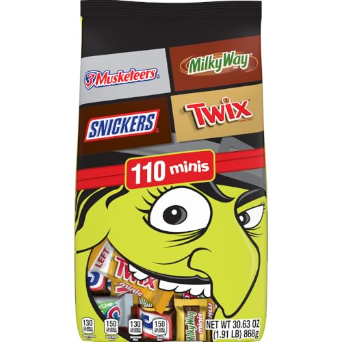
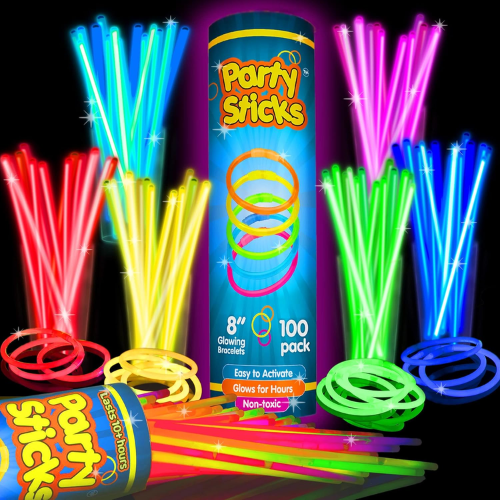
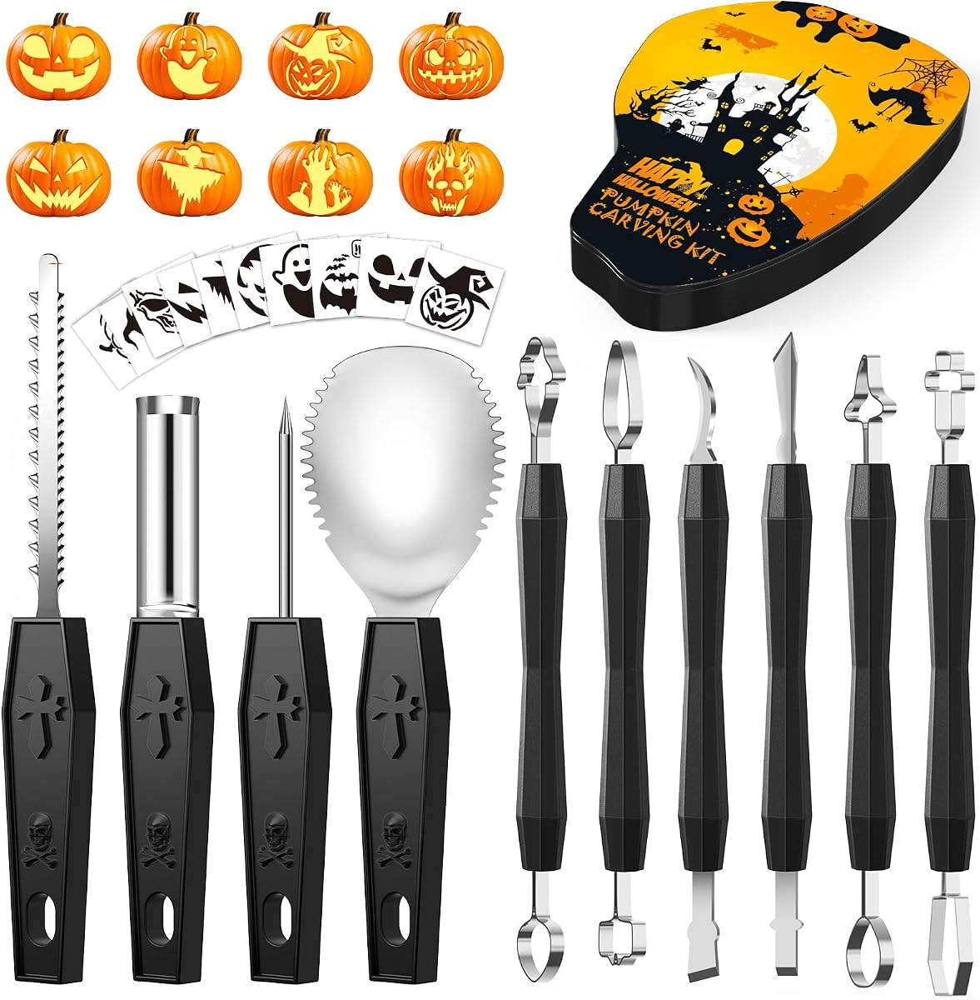
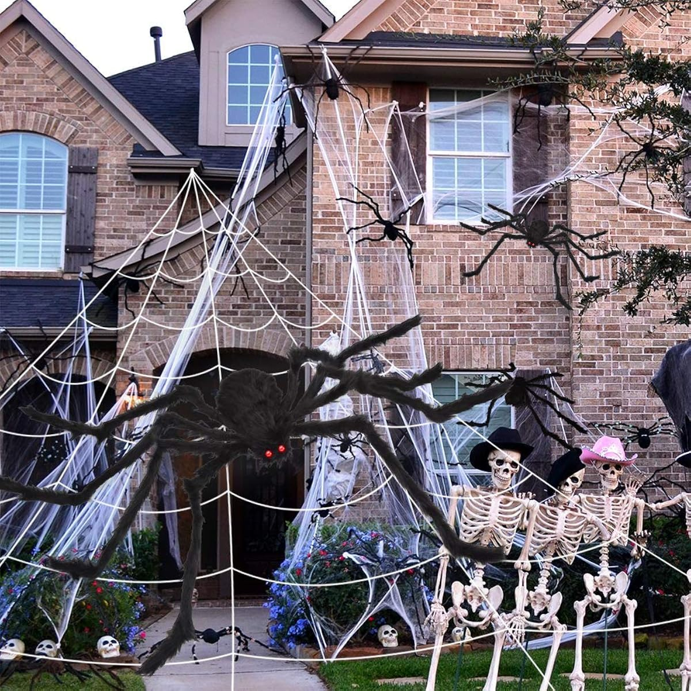
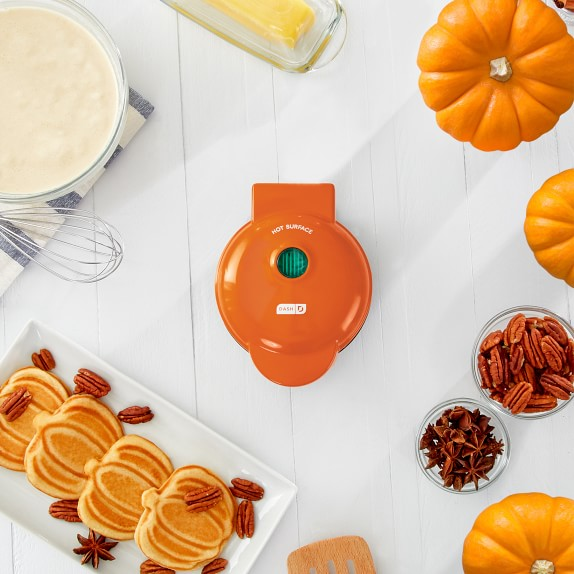

10 Best Halloween Finds Under $25
Halloween spending sneaks up the same way every year: a candy run here, a decor impulse-buy there, and suddenly the spooky season cost more than the electric bill. It does not have to. Everything on this list is under $25, and most of it is reusable next year.
There is a second filter behind this list, too: every pick below already proved itself on our daily deals feed this fall — real products our readers clicked, from brands people recognize, at prices we verified when we posted them. No no-name filler, no coupon-code gymnastics.
It also helps to know where Halloween money quietly leaks, because it is rarely the big purchase. It's the second candy run on October 30th because the first bag looked small in the cart. It's the decor bought at full price in the final week, when the same items were discounted all month. And it's the single-season plastic that breaks in storage and gets bought again next year. This guide is organized against all three leaks: buy the candy once and generously, buy the decor early while seasonal stock is still promoted, and weight the list toward things — a proper carving kit, pillow covers, a projector — that fold, stack, or box away and come back out next October. The cheapest Halloween is the one you only have to buy once.
How we picked these
- Under $25, really. If a pick cannot stay under the cap at its normal price, it does not make the list.
- Recognizable brands or proven formats. Mars, Dash and PartySticks beat mystery labels at the same price.
- Mostly reusable. The carving kit, projector, inflatable and pillow covers all come back out next October — the per-year cost drops fast.
- Ordered in time. Halloween is Saturday, October 31 — order this week and standard shipping still lands comfortably.
We did not accept payment for placement, and we re-check every pick's price and listing before this guide is shared each season.

1. Mars 110-Count Chocolate Assortment — the hero candy bag
Snickers, Twix, Milky Way and 3 Musketeers in one 110-count bulk bag — the recognizable-brand candy haul that covers a whole night of trick-or-treat traffic without a second trip. This is the same bag our X followers already clicked on twice this month, which is exactly the kind of proven pick a hero slot should be.
- Pros: four crowd-pleaser brands in one bag; 110 pieces goes a long way; individually wrapped for handing out.
- Cons: chocolate melts — keep it somewhere cool until the big night.
Best for: anyone expecting a busy porch, trunk-or-treat, or a classroom party.
Check current price
2. PartySticks Ultra Bright Glow Sticks, 100-Pack — the safety pick that doubles as fun
One hundred 8-inch glow sticks with connectors, so kids can wear them as necklaces and bracelets and stay visible after dark — and adults can drop them in drink buckets, line a walkway, or mark the candy bowl. The cheapest insurance on this list, and the pack is big enough to share with the whole street.
- Pros: 100-pack covers a group; connectors included for wearables; works for costumes, parties and porch decor alike.
- Cons: single-use — once they are cracked, they are done for the night.
Best for: trick-or-treat groups, party hosts, and anyone lighting a dark walkway.
Check current price
3. Shuttle Art 25-Piece Pumpkin Carving Kit — the full toolkit in one case
Fifteen stainless carving tools, ten stencils and a carrying case — everything between a plain pumpkin and the porch showpiece, in one kit the whole family can pass around. Buying the pieces separately costs more and guarantees one tool goes missing; the case fixes that for next year too.
- Pros: complete kit with stencils for beginners; stainless tools are reusable year after year; case keeps it together.
- Cons: real blades in the set — carving night is still an adult-supervised job for younger kids.
Best for: families doing more than one pumpkin, and first-timers who want the stencil safety net.
Check current price
4. OCATO Giant Spider + 200-Inch Web — the biggest porch impact on the list
A 59-inch giant spider on a 200-inch stretch web: the classic one-purchase haunted-house front yard. It reads from the street, goes up in minutes, and folds away flat when November arrives. If you buy one outdoor decor piece this year, this is the format that photographs best.
- Pros: huge visual footprint for one item; fast setup; packs down small for storage.
- Cons: the web needs anchor points — a porch rail, bush or stake points make it easier.
Best for: the house that wants to be the street's photo stop without a yard full of inflatables.
Check current price
5. Toodour Double-Head Halloween Projector Lights — moving ghosts, zero ladders
A double-head outdoor projector that throws ghost patterns across the house or garage door — the decorated look with none of the string-light wrestling. It is waterproof for outdoor use and runs on a timer, so it turns itself on for trick-or-treat hours and off when the street goes quiet.
- Pros: whole-house effect from one device; waterproof and timer-controlled; no bulbs to untangle next year.
- Cons: needs a dark surface and some distance to read well — very bright street lighting washes it out.
Best for: anyone who wants maximum decor with minimum setup, especially renters.
Check current price
6. Dusor 5-Foot Inflatable Spider — the trunk-or-treat secret weapon
A five-foot inflatable spider with built-in LEDs that inflates itself and lights up after dark. It was designed with car trunks in mind, which makes it the pick for trunk-or-treat, but it works just as well anchored on a lawn. Deflated, it stores in a shoebox-sized bundle.
- Pros: self-inflating with built-in lights; made for trunk-or-treat; tiny storage footprint off-season.
- Cons: needs a power source nearby — a car outlet at trunk-or-treat, an outdoor outlet at home.
Best for: trunk-or-treat cars, small yards, and anyone short on storage space.
Check current price
7. UpBrands Skeletons, 36-Count — the non-candy handout kids actually keep
Thirty-six mini skeletons for the candy bowl, classroom treat bags, or party favor table. Every year needs a non-candy option for allergy-conscious houses and school rules — this is the one that does not feel like a consolation prize, because kids pose and play with them long after the sugar is gone.
- Pros: 36-count covers a class or a busy bowl; allergy-safe, sugar-free handout; doubles as table decor.
- Cons: small pieces — keep them for the older-kid bowl, not toddlers.
Best for: classrooms, allergy-aware houses, and party favor bags.
Check current price
8. MONNCHA Light-Up Ghost Trick-or-Treat Bag — the bag that is part of the costume
A reusable ghost bag with built-in LED lights: it makes a kid easier to spot in the dark and it holds up for more than one season, unlike the plastic pumpkin that cracks by year two. The light-up ghost face does double duty as costume and safety gear.
- Pros: LED visibility after dark; reusable across years and siblings; no batteries-in-a-bucket awkwardness.
- Cons: one bag per kid — the multi-kid discount math is on you.
Best for: younger trick-or-treaters walking after dark, and parents who buy once and reuse.
Check current price
9. SINYASAN Pumpkin Pillow Covers, Set of 2 — indoor Halloween, the cozy way
Burnt-orange pumpkin pillow covers in an 18x18 set of two — the five-minute living-room Halloween upgrade that fits the cozy fall look instead of fighting it. Swap the covers, keep your inserts, and the couch is seasonal without a single plastic decoration indoors.
- Pros: set of two; works with standard 18x18 inserts you already own; stores flat in a drawer.
- Cons: covers only — you need your own pillow inserts.
Best for: indoor decorators, small spaces, and the fall-aesthetic crowd.
Check current price
10. Dash Mini Pumpkin Waffle Maker — the Halloween morning pick
Dash's mini waffle maker with a pumpkin impression, from the brand that made mini waffle makers a dorm-and-kitchen staple. Halloween breakfast, pumpkin-shaped snacks for the party table, and a giftable little appliance that keeps getting used after October for regular mini waffles.
- Pros: recognizable brand; small footprint, easy storage; earns its keep past Halloween.
- Cons: one waffle at a time — it is a mini, so big-family breakfasts take turns.
Best for: Halloween-morning families, dorm rooms, and anyone who loves a themed breakfast.
Check current priceBuying tips
Spend on the candy. It's the whole point of the night, it's the one thing you can't fake, and running out at 7 p.m. is the only Halloween failure kids actually remember. A big brand-name assortment also solves the quality problem — you know exactly what you're handing out, and whatever survives the night is candy your own household will happily finish.
Spend on one anchor decoration. A single strong piece — the projector washing the house in ghosts, the inflatable on the lawn — reads as "the Halloween house" from the street. Three forgettable decorations don't add up to the same effect, and they triple your storage problem in November.
Save on everything with a one-night job. Glow sticks, treat bags, and tableware are consumables; buy the proven cheap versions and don't upgrade them. The same logic applies to party extras for a single evening — borrow, improvise, or buy the format that's already a bestseller instead of paying a premium for novelty packaging.
Save all year by buying storage-friendly. Flat pillow covers beat bulky decor, a boxed carving kit beats loose tools in a junk drawer, and anything inflatable should deflate to a shoebox. The households that spend the least on Halloween aren't buying less — they're re-buying almost nothing.
Common questions
What is the single best buy on this list?
The Mars 110-count assortment (pick #1). It is the one purchase that covers the main event — trick-or-treat itself — and it is the pick our own readers have clicked most this month.
What if I only decorate indoors?
Start with the pillow covers (pick #9) and the projector lights (pick #5) aimed at a window or garage door — full effect, nothing stored in the yard, nothing weather-dependent.
When should I order?
This week. Halloween falls on Saturday, October 31, 2026, and shipping cutoffs tighten in the final week — the under-$25 prices on seasonal stock also tend to firm up, not drop, as the day gets close.
How much candy do I actually need?
More than feels reasonable, and in one purchase. Estimate your busiest hour from last year and buy for that, plus a cushion — Halloween lands on a Saturday this year, which usually means earlier starts and heavier foot traffic. One large assortment beats three small bags on cost per piece, and unopened leftovers keep for school lunches, baking, and the office candy bowl.
What should I store, and what should I toss?
Store anything with a motor, a blade, or fabric: the projector, the carving kit, the inflatable, the pillow covers. Toss or donate what's left of the consumables — glow sticks fade, treat bags tear, and partial decor looks tired by year two. Writing a one-line note in the storage box ("porch: projector + covers; candy: buy 2 bags") takes thirty seconds and saves next October's version of you a full guessing game.
The bottom line: a great Halloween doesn't need a bigger budget — it needs the candy bought once, the decor bought early and stored well, and the anchor pieces chosen for next year as much as this one. Everything above was picked to make this October cheaper and every October after it cheaper still.